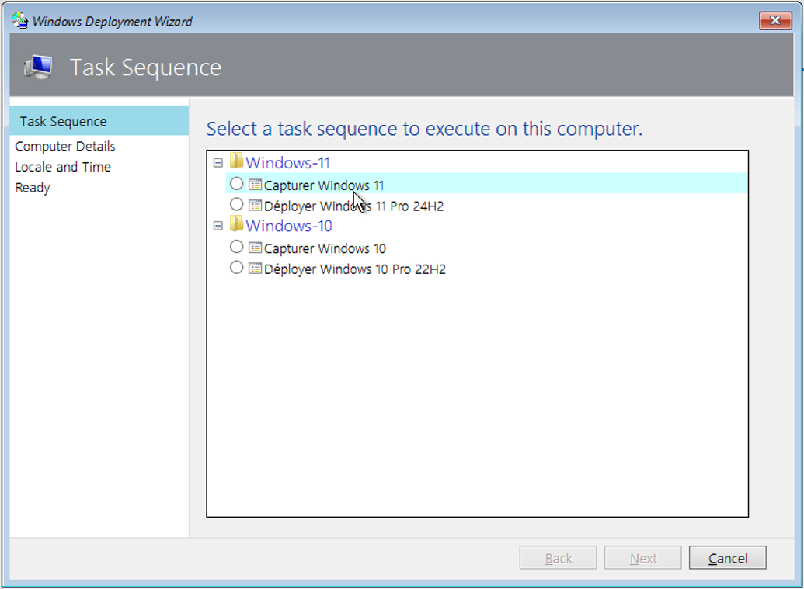

Alexis PEREIRA
Projet 2 - Déploiement automatique d’un OS
Introduction
Ce projet consiste à automatiser complètement le déploiement de Windows 10 et Windows 11 via MDT (Microsoft Deployment Toolkit), avec une installation silencieuse de logiciels comme VLC, TeamViewer et Paint.NET, tout en préconfigurant des paramètres comme le mot de passe de session TeamViewer. L’objectif est d’obtenir une image de base réutilisable, capturable et déployable à grande échelle, sans intervention humaine.
Objectifs du projet
- Configurer un serveur MDT opérationnel.
- Automatiser l’installation de Windows 10 Pro (22H2) et Windows 11 Pro (24H2).
- Intégrer des logiciels avec installation silencieuse.
- Capturer une image système personnalisée avec Sysprep.
- Configurer l'ajout automatique à l'Active Directory.
Matériel & Outils
- Machine virutelle avec Windows Server 2016 et un AD, DNS et DHCP
- Machine virutelle avec Windows Server 2022 et WDS + MDT
- Machine virtuelle vierge pour simuler les postes clients
- Image ISO Windows 10 Pro 22H2 et Windows 11 Pro 24H2
- Fichiers d’installation des logiciels (.msi / .exe)
- Sysprep, DISM, commandes PowerShell
Étapes de réalisation
- Configuration des serveurs WDS et DHCP pour permettre de boot via le réseau
- Installation de MDT sur Windows Server 2022 pour déployer Windows 10 et 11
- Intégration automatique des machines au domaine Active Directory
- Capture et déployement d'un master Windows 11 24H2
- Déploiement des applications MSI et EXE sur Windows 10.
Documents
Voici la fiche PDF détaille chaque étape du projet, depuis la configuration initiale jusqu’aux tests de validation. Elle contient également des captures d’écran et les commandes principales. Ainsi que la fiche synthétique de présentation du projet à présenter à l’épreuve E6 du BTS SIO. Elle contient le contexte, les objectifs, les outils et les productions livrées. Mais également le fichier de l'infrastructure réseau au format .pkt pour Cisco Packet Tracer.
Voir la fiche de procédure Voir la fiche E6